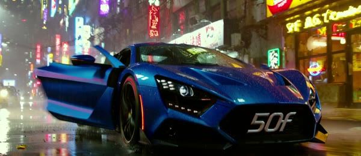
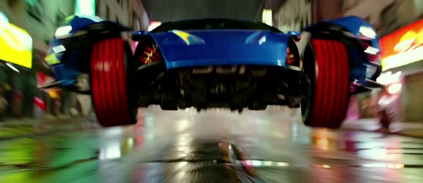
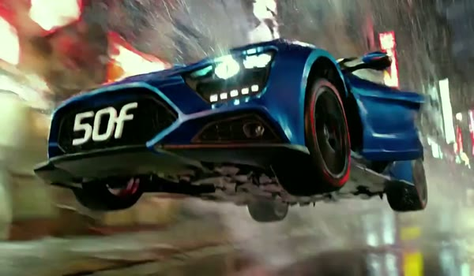

同一个雨夜跑车镜头跑了三版，从「背景崩」到「手崩」再到可用成片——这不是抽卡记录，而是发现问题、换模型、改控制的判断链。另附 5 条不同模型的视频成片，展示工具广度与场景适配能力。
三版都是同一句提示词起点：雨夜霓虹街道，蓝色跑车（SOF 涂装）低角度掠过，镜头跟随。差异来自控制手段，而不是运气。



| 版本 | 模型 / 参数 | 失败点 | 修复动作 |
|---|---|---|---|
| V1 | 即梦 · 默认运动强度 | 街景建筑与招牌被拉扯 | 降低运动幅度，缩短单段时长 |
| V2 | 换模型 · 高细节档 | 轮毂与前脸细节畸变 | ControlNet 锁车体结构，限制形变区域 |
| V3 | 结构锁定 + 局部重绘 | 轻微拖影（可接受） | 成片；保留前两版作为迭代证据 |
不同模型有不同强项：广告质感找 AnimateDiff，竖版社媒找 H3，人物表演找 Ref2VA，2D 风格找 jimeng / 豆包，氛围剪影找 1-1。下面是各取一条的实测成片。